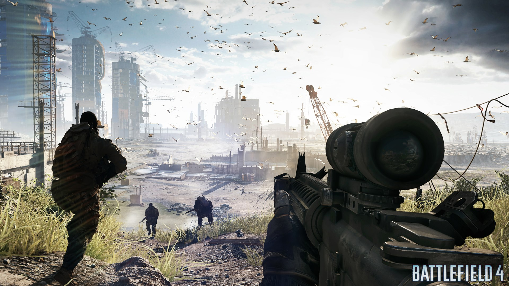

News
10/01/2014
La fin des soucis ?
EA et DICE ont annoncé l'arivée prochaine d'un gros patch pour Battlefield 4. Une mise à jour essentielle destinée à toutes les plateformes. Elle devrait débarquer en fin de mois et résoudre tous les problèmes techniques qu'a rencontré le jeu depuis son lancement fin octobre. Autrement dit, on nous promet la fin des bugs, des plantages, des serveurs foireux, des déconnexions et j'en passe...
17/12/2013
"Résolution des bugs..."
Electronic Arts l'avait annoncé il y a quelques jours, le studio DICE travaillait actuellement exclusivement à proposer une mise à jour permettant d'en finir avec les divers bugs qui pénalisent les joueurs de Battlefield 4. Hier une importante mise à jour a été déployée, malheureusement, elle apporte autant de problèmes qu'elle n'en résout.
14/12/2013
Battlefield 4 et leurs serveurs
La stabilité des servers de Battlefield 4 est un sujet à polémiques pour la communauté de joueurs appréciant la licence. DICE continue son suivi sur le jeu et sort cette semaine un nouveau patch pour améliorer l'expérience globale sur son FPS. Voici donc, en détail, le contenu des mises à jour de BF4 pour les plateformes Xbox One et Playstation 4.
02/11/13
Paris Games Week : nous y étions !
Nous étions à la Paris Games Week ce week end, n'hésitez pas à nous poser des questions sur le forum, nous sommes toujours là pour vous répondre!
02/10/13
Battlefield 4 la bêta
Croyez-le ou non, la bêta de Battlefield 4 n'est pas une démo camouflée, mais bien une ancienne version non représentative de la qualité finale du jeu, dixit le boss de DICE. EA a d'ailleurs listé quelques uns des bugs que vous risquez de rencontrer en y jouant.